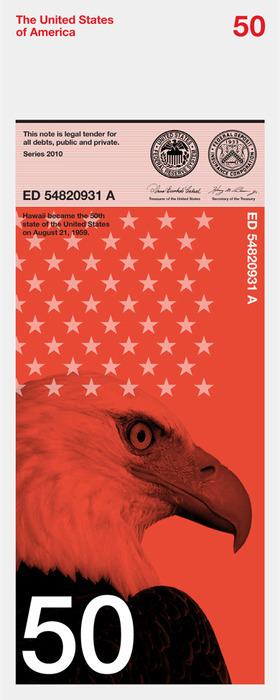
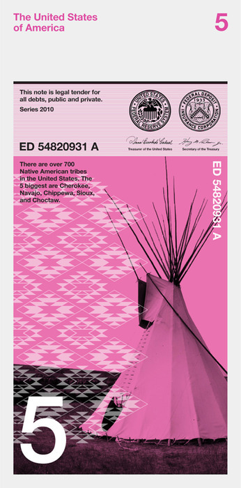
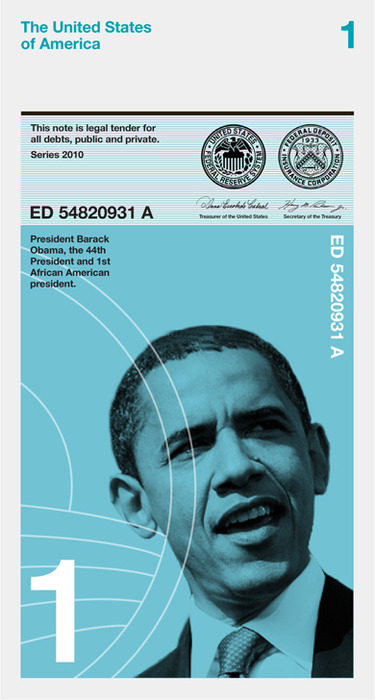

Tue, 24 Aug 2010 17:15:00 · CreativeReview · Design · Money · Obama · USD · USA
The Redesign of The US Dollar Bill
There’s been some mixed responses on the proposed new design of the USD bill. I can almost hear someone say, “Oh dear.. isn’t that way too many colour? How utterly confusing!”
Well, pardon me for saying this, but I’m all for Colour-Coded Bill. The rest of the world find it easier to deal with different denomination of bill simply by telling the colour different, apparently not in the US. I’ve been hearing some fellow Americans lamenting over the fact that they have to deal with too many ‘colour of money’ when traveling abroad. I must respectfully disagree.
Imagine this… I handed out the wrong note to a cabby [especially when one was trying to find the money in the dark!], and only when the note was smaller than what I was supposed to pay them that they would voiced their complaints, but not if it’s the other way around, mind you! This happened in rather worrying frequency, I sadly admit. Had the Dollar were colour coded, surely that won’t happen.
I do have to say that these proposed design by Dowling Duncan had some potential. For once, at least we have a designer money…. So sue me for liking them.



These design was part of the ongoing open submissions scheme organized by New York Designer, Richard Smith, to rebrand the US Dollar. Whether this is going to happen for real, now, that’s another question. Okay, here’s the catch though… why did the designer put Obama on a One Dollar bill? Surely, he must be worth than that, no?
- Read more here http://is.gd/eAUE6 [Images courtesy of CR Blog], and the Dollar ReDe$ign Project.